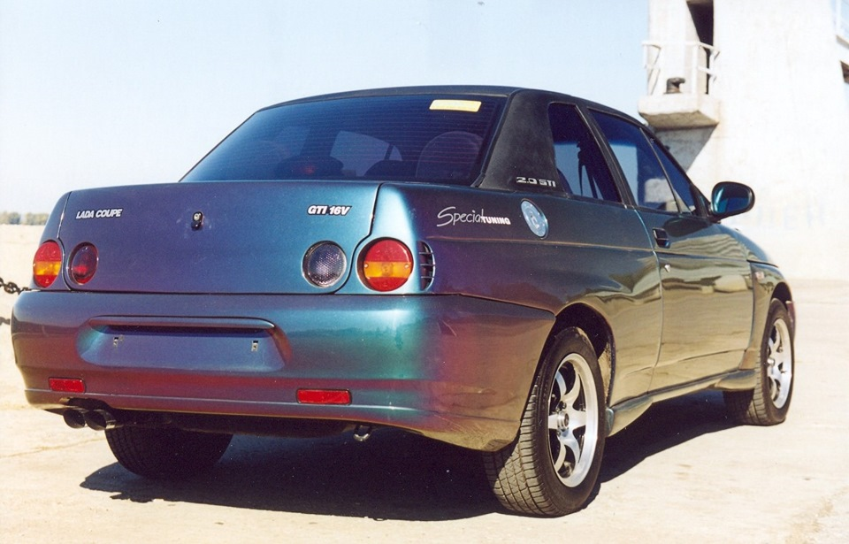

ВАЗ-2110 «Lada-110» (простореч. название «десятка») — седан, родоначальник третьего поколения семейства ВАЗ, головная его модель.
Работы по созданию III поколения начались в 1985 году, что совпало со сменой индекса осваиваемого кузова типа седан из семейства моделей «Спутник», который в результате получил обозначение ВАЗ-21099. Освободившийся индекс ВАЗ-2110 был присвоен основополагающей модели III поколения. В отличие от предыдущего поколения, разработка данного началась с привычного типа кузова седан; в свою очередь, интересным фактом является то, что тип «3-дверный хетчбэк» (который ошибочно обозначают купе) под индексом ВАЗ-21123 в данном семействе кузовов был выпущен ограниченным тиражом ОПП и является редким — в отличие от его предшественника, модели ВАЗ-2108. Первый опытный экземпляр ВАЗ-2110 серии «0» появился в июле 1985 г. Макет следующего варианта носил обозначение «100» и отличался от первого незначительно. Макет серии «200» являлся более проработанным вариантом серии «100», с улучшенной аэродинамикой. В 1987 году был сформирован макет серии «300», образ которого стал окончательным. По договору сотрудничества с маркой «Порше», её работниками в кузов были внесены мелкие правки, касавшиеся его форм: для большего снижения «коэффициента лобового сопротивления», что было однобоким подходом, поскольку при этом оставались нерешёнными вопросы по шумности и загрязняемости боковин кузова — как вспоминал один из создателей дизайна кузовов данного семейства, Владимир Ярцев. Летом 1988 года опытный образец ВАЗ-2110 был впервые показан широкой публике на ВДНХ в рамках выставки «Автодизайн-88». Семейство моделей использует платформу — шасси и двигатель «Гамма», которые были изменены под конструкцию кузовов данного поколения. В ноябрьском номере журнала «За рулём» за 1990 год были опубликованы «шпионские» фото предсерийной модели, снятые на полигоне фирмы Porsche. Серийный выпуск ВАЗ-2110 планировалось начать в 1992 году, однако из-за наступившего экономического кризиса эти планы сдвинулись на несколько лет. При серийном производстве отказались от одного из основных дизайнерских решений, заложенного изначально и являющегося неотъемлемой частью цельного образа моделей данного семейства: покрытия чёрным цветом рамок дверных окон, рамок боковых задних окошек/окон, нижних частей боковин кузова, дверей и бамперов. Также не стали применяться наружные зеркала заднего вида, крепящиеся к дверям под окнами (а не к углам оконных проёмов). Для данных автомобилей ВАЗ были созданы штампованные колёса с круглыми вентиляционными отверстиями (взамен прежних, с продолговатыми), а также изначально было предусмотрено их накрытие пластмассовыми декоративными колпаками, также являющимися частью дизайна этих автомобилей. Кузова данного семейства являются последними, носившими значок ладьи, на котором первоначально она не была заключена в овал. В едином стиле с данным семейством автомобилей был выполнен кузов IV поколения автомобилей повышенной проходимости ГАЗ/УАЗ — моделей УАЗ-3160/3162 (3163). В конструкцию данного поколения автомобилей инженерами изначально было заложено его оснащение 16-клапанной головкой блока цилиндров, создание которой велось с конца 1980-х годов. Первая модель этого мотора получила индекс ВАЗ-2112 и была представлена широкой публике в конце 1992 года, оснащавшая выставочный предсерийный экземпляр модели кузова седан — ВАЗ-2110. Она имела рабочий объём 1.5 литра, импортный ЭБУ марки «Дженерал моторс», и выдавала мощность 94 л. с. Производство этих двигателей началось в разрыве с началом производства автомобилей — в 1997 году, по причине чего первые, ранние экземпляры машин вынужденно оснащались устаревшим двигателем с 8-ми клапанной головкой, не соответствовавшей данному поколению автомобилей. Из мелких новшеств также можно отметить возможность регулирования наклона рулевой колонки, и газовые упоры капота — вместо обычных (с глобальным рестайлингом 2007 года применение газовых упоров прекратилось). По сложившимся обстоятельствам ВАЗ стал единственным заводом, выпустившим современное поколение легковых автомобилей для 1990—2000 гг. — ВАЗ-2110. Его кузова-современники других заводов по производству легковой автомобильной техники: ГАЗ-3103, АЗЛК-2143, ЗАЗ-1106 не попали в конвейерное производство, на чём дальнейшее развитие (эволюция) их легкового автотранспорта (собственной разработки) прервалось.
Выпускался на АвтоВАЗе с 1995 по 2007 год. Первые ВАЗ-2110 были выпущены 27 июня 1995 г. в опытно-промышленном производстве АвтоВАЗа, серийное производство развёрнуто с августа 1996 г., продажи начались в ноябре того же года. К тому времени технологии в мировом автомобилестроении вышли на новый уровень, и прорывную для конца 80-х модель уже нельзя было назвать абсолютной новинкой. Однако несмотря на это, а также на некоторые претензии к качеству производства в 90-е годы, для отечественного автопрома она всё равно стала шагом вперёд. В отличие от «жигулей» и «самар», ВАЗ-2110 позиционировался как автомобиль более высокого класса, вполне современный и конкурентоспособный как внешне, так и внутренне. В частности, на машине были установлены электронная система управления двигателем (хотя первые ВАЗ-2110 были карбюраторными) и диагностический блок (бортовой компьютер), была предусмотрена возможность установки гидроусилителя руля и электрических стеклоподъёмников, в деталях кузова использовался оцинкованный металл, была применена новая технология окраски кузовов и т. п. Появление «десятки» ознаменовало собой новый этап в развитии отечественного автопрома. В марте 2007 года на главном конвейере АвтоВАЗа было запущено серийное производство машин нового семейства LADA Priora, представляющих собой глубокий рестайлинг «десятки» и призванных сменить последнюю в модельном ряду компании. 7 месяцев «Приоры» и «десятки» выпускались параллельно. Последний комплект ВАЗ-2110 был собран на тольяттинском конвейере 15 октября 2007 года. ВАЗ-2111 (универсал) и ВАЗ-2112 (хетчбэк) выпускались ещё два года и год соответственно. До 2014 года ВАЗ-2110 собирались по лицензии из машинокомплектов АвтоВАЗа на автозаводе корпорации Богдан в украинском городе Черкассы под маркой «Богдан». Также компанией «Богдан» был разработан пикап на базе ВАЗ-2110.
В 2002 году специалистами МАИ были разработаны образцы ВАЗ-2110 в комплектации с бесступенчатым вариатором VT1 фирмы ZF.
В 2005—2007 годах серийно производились только модели 21101 и 21104. Машины последних лет выпуска отличаются новой конфигурацией задних фонарей, а также модернизированной панелью приборов, получившей волнообразную форму взамен ступенчатой.
Совместный проект компании АвтоВАЗ и фирмы «Мега-Лада», созданный на основе автомобиля ВАЗ-2110 для его омологации в автоспорте. Концепт-кар, был представлен на выставке МИМС-96, и назывался «Жёлтая Акула». На нём устанавливались оригинальные колёсные диски фирмы Slik жёлтого цвета. Двигатель «Мега-Лада Мотор-спорт» — на основе «восемьдесят третьего» блока. Позже он был заменён на Opel C20XE 16V мощностью 150 л. с. Двигатели, коробки передач и другое оборудование поставляло спортивное отделение английского филиала General Motors — Vauxhall. Автомобили «бюджетной» комплектации отличались двигателем Opel Ecotec X20XEV мощностью 136 л. с. Изначально на автомобиль устанавливались тормозные механизмы марки «Lockheed». Кузов ВАЗ-21106 отличается от ВАЗ-2110 задними и передними крыльями с расширенными арками колёс. В фирме «Арсенал-авто» на этот автомобиль устанавливали внешний пластиковый обвес. Впоследствии данный обвес по желанию клиентов стали устанавливать и на обычные «десятки», комплект назывался «Нола». В 1998 и 1999 году происходили изменения дизайна автомобиля. Стала иной форма бамперов, удалены пластиковые накладки на дверях и капоте. По словам производителя, это уменьшило уровень шума в салоне автомобиля при движении со скоростью выше 200 км/ч. В 2003 произошла смена пластикового обвеса на совершенно другой по форме. Также производились машины с полным отсутствием обвеса за исключением расширенных колёсных арок. Фирма «ФРОСТ» занималась установкой системы кондиционирования воздуха в салоне. В автомобиль любой комплектации устанавливался гидроусилитель немецкой фирмы ZF. Выпускалась версия ВАЗ-21106 с кузовом типа купе. Автомобиль удостаивался приза журнала «За рулём» — «За лучшие экспонаты МИМС-96».
4-дверный удлинённый лимузин на базе ВАЗ-2110, штучно выпускавшийся с 1997 по 2006 год. ВАЗ-21109 Консул выпускался мелкосерийно на одном из дочерних предприятий АвтоВАЗа с 1997 по 2006 годы. Автомобиль впервые был представлен официально в июле 1997 года. Несмотря на большую длину, салон вмещал только 4 человека. На ВАЗ-21109 был установлен 16-клапанный бензиновый двигатель ВАЗ-2112 объёмом 1,5 литра и мощностью 100 л. с. Автомобиль имел удлинённую на 700 мм базу, 14-дюймовые диски из лёгкого сплава, АБС и подушки безопасности. Внутри салона была установлена перегородка между передним и задним пассажирским отсеком, присутствовали персональные откидные столики для задних пассажиров. Посередине салона находился бар с холодильником, мини-телевизор и видеомагнитофон. В отделке интерьера использовались панели из дерева и кожи. Над пассажирским салоном размещался люк в крыше.
Версия лимузина для тех, кто победнее. Можно назвать этот кузов "лонг". Кузов был удлинён относительно 2110 на 18,5 см. Для данной модели был так же разработан двигатель с 16-клапанной головкой увеличенного до 1,8 объема, но в массы так и не пошёл, отличался низкими показателями и ресурсом. Можно сказать что это предшественник двигателя 1,8, который позднее появился на Vesta/X-Ray, но и тот так же заработал отрицательную репутацию.
Предсерийные образцы:
Ранний вариант:
Поздний вариант:
Двигатели (2112 - с алюминиевым впускным коллектором, 21124 с пластиковым коллектором, 2.0 двигатель от Опель):
Салон ранний и поздний:
106 модель купэ:

106 модель седан:
ВАЗ-21108 Премьер:
ВАЗ-21109 Консул: